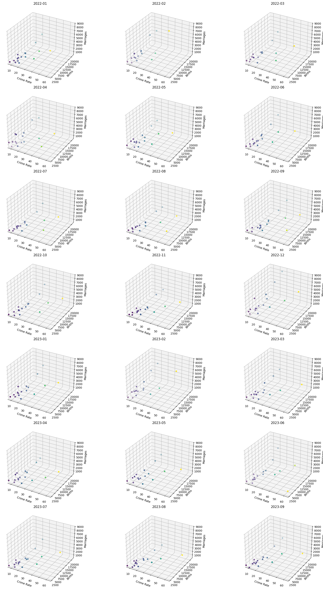
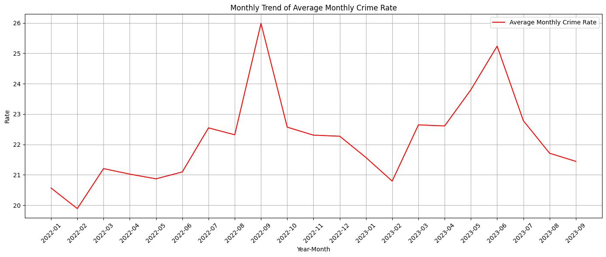
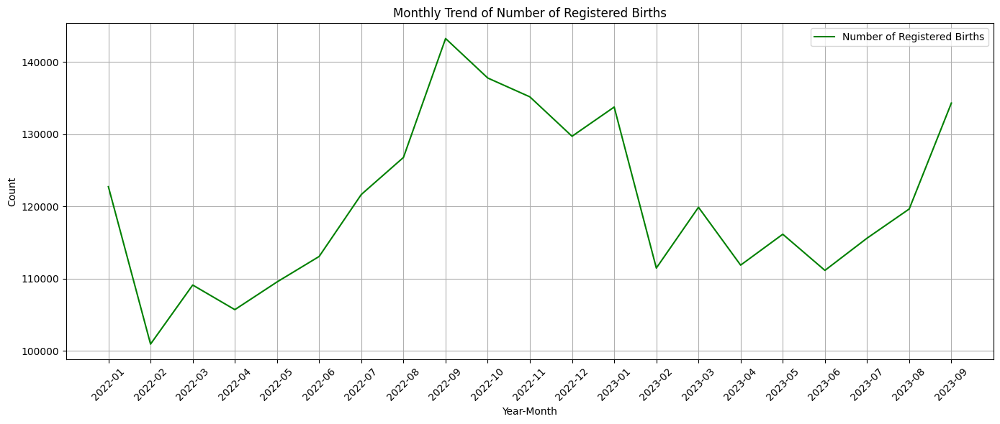
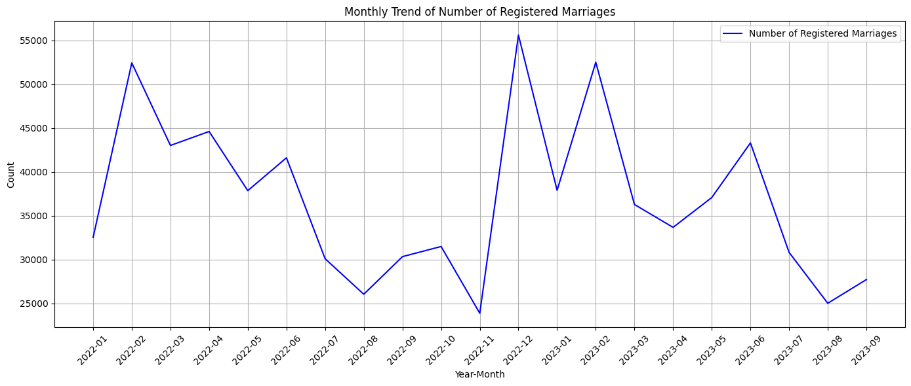
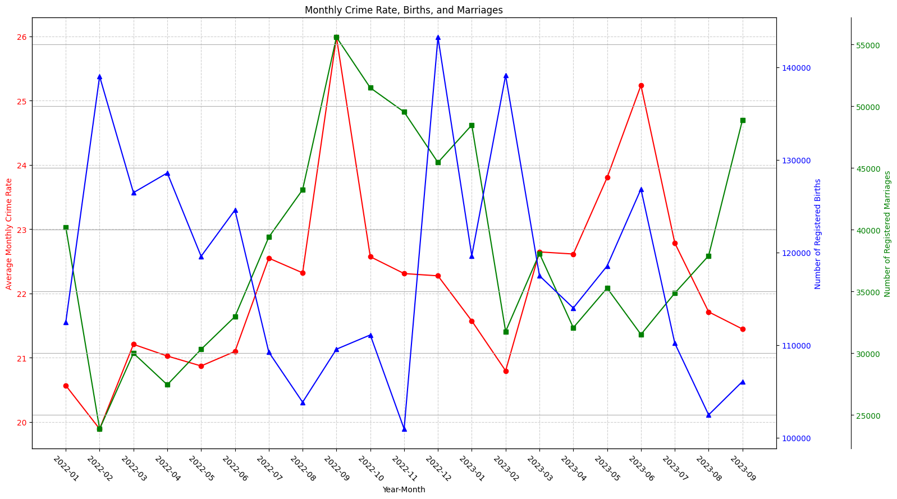

RESEARCH QUESTION 1
We’ll visualize the data via two means:
3D Scatter Plots per Month
To highlight patterns, clustering, and outliers within each month, allowing for month-to-month comparisons of the relationships among the variables.
Line Graphs + Multi-axis Line Graph
To track the trends of each variable over time and examine potential correlations between crime rates, birth counts, and marriage counts on a broader temporal scale.
VISUALIZATION 1: 3D SCATTER PLOTS PER MONTH

Seen above: 21 3D Scatter Plots for each month from 2022-01 to 2023-09.
The above graphs illustrate that:
The time periods of 2022-01 (January 2022) to 2022-07 (July 2022), all except 2022-04 (April 2022) appear to cluster in a similar, roughly linear pattern. In contrast, the cluster for 2022-04 (April 2022) is more spread out and does not follow the same directional trend as the others.
The time period of 2022-08 (August 2022) to 2023-02 (February 2023), all plots exhibit relatively normal clustering patterns, except for 2022-12 (December 2022), which shows numerous outliers that are noticeably more extreme and distant from the main cluster.
The time period 2023-03 (March 2023) to 2023-09 (September 2023), the clusters for 2023-06 (June 2023) and 2023-07 (July 2023) appear more dispersed compared to those of the other months.
Overall, most scatter plots display similar clustering patterns, with a few exceptions observed in the time periods 2022-04 (April 2022), 2022-12 (December 2022), 2023-06 (June 2023), and 2023-07 (July 2023).
The observations and possible events corresponding to these time periods are summarized in the table below.
| Month-Year |
Notable Events |
Potential Impact on Data |
| 2022-04 (April 2022) |
Tropical Storm Agaton; COVID-19 Omicron BA.2.12 case; RA 11712 signed |
Disruption in civil services; potential delays in registrations; fluctuations in crime rates |
| 2022-12 (December 2022) |
Severe flooding; Implementation of child marriage ban; SIM card registration law |
Disruption due to natural disaster; decrease in child marriages; potential impact on crime statistics |
| 2023-06 (June 2023) |
Pride PH Festival; Peak in birth registrations |
Increase in public gatherings; potential rise in marriages and births |
2023-07
(July 2023) |
High number of marriages in Makati; ongoing post-pandemic adjustments |
Seasonal increase in marriages; societal behavior shifts affecting crime and registrations |
VISUALIZATION 2: Line Graphs + Multi-axis Line Graph



Seen above: 3 Line Graphs each for Crime Rates, Births, and Marriages
The above graphs illustrate that:
Crime Rate
Crime rate fluctuates over the period, with noticeable peaks around 2022-09 (September 2022) and 2023-06 (June 2023).
Birth
Birth counts generally trend higher from 2022-08 (August 2022) to 2022-11 (November 2022).
There is a steep decrease in 2023-02 (February 2023), followed by a rise toward 2023-09 (September 2023).
There exist significant dips in birth counts that appear consistently between 01 (January) and 02 (February) for both 2022 and 2023.
There also appears to be seasonal clustering of high birth counts during 07 (July) to 09 (September) across both years.
Marriage
Marriage counts experience sharp month-to-month fluctuations, with notable spikes in 2022-02 (February 2022), 2022-12 (December 2022), and 2023-02 (February 2023).
There are dips in 2022-11 (November 2022) and 2023-08 (August 2023).
There is a large spike in 2022-12 (December 2022) that may reflect an increase in marriages due to holidays or cultural practices.
There exist spikes in February (02) that may be associated with Valentine's Day-related events and the cultural association of February with love.

Seen above: Multi-axis line graph layering Crime Rate, Births, and Marriages
The above graph illustrates that:
In 2022-09 (September 2022), two metrics peak — both the crime rate and birth counts are relatively high, while marriage counts begin to rise again.
In 2023-06 (June 2023), there is a noticeable surge in both crime rate and marriages, without a corresponding increase in birth counts.
During the extended period from 2022-05 to 2023-02 (May 2022 to February 2023), birth counts and crime rates generally follow similar trends, rising and falling in tandem.
Between 2023-04 and 2023-08 (April 2023 to August 2023), marriage counts and crime rates appear to align closely, exhibiting parallel increases and decreases.
The observations and possible events corresponding to these trends are summarized in the table below.
| Month-Year |
Notable Events |
Potential Impact on Data |
| 2022-09 (September 2022) |
Peaks in crime rate and births; marriages rising | Seasonal birth trends; cultural marriage preferences; socio-economic factors affecting crime rates |
Peaks in crime rate and births; marriages rising | Seasonal birth trends; cultural marriage preferences; socio-economic factors affecting crime rates |
| 2023-06 (June 2023) |
Surge in crime rate and marriages; stable births | Pride PH Festival; traditional wedding month; gestation period affecting birth rates |
Surge in crime rate and marriages; stable births | Pride PH Festival; traditional wedding month; gestation period affecting birth rates |
2022-05 to 2023-02
(May 2022 - February 2023) |
Parallel trends in births and crime rates | Post-pandemic societal adjustments; policy changes like child marriage ban |
Parallel trends in births and crime rates | Post-pandemic societal adjustments; policy changes like child marriage ban |
| 2023-04 and 2023-08 (April-August 2023) |
Synchronized trends in marriages and crime rates | Economic conditions; impact of Typhoon Egay; cultural events and public holidays |
Synchronized trends in marriages and crime rates | Economic conditions; impact of Typhoon Egay; cultural events and public holidays |
Important Note: The events pointed out in the tables during interpretation are simply observational, and their potential impacts are pure speculation and do not, in any way, guarantee causation that these events transformed our data.
RESEARCH QUESTION 2
We’ll visualize the data via two means:
Radar Charts Per Region
To highlight regional differences across four features
Composite Choropleth Map
To support spatial comparisons at a high-level glance
VISUALIZATION 1: RADAR CHARTS FOR EACH REGION

Seen above: Radar Charts for NCR and Regions 1, 2, and 3
The above graphs illustrate that:
High urbanization level often aligns with elevated features across regions
Regions with higher Percent Urban like NCR and Region IV-A report relatively high values across Crime Rate, Birth Count, and Marriage Count.
Low-urbanization regions tend to show lower values across all indicators
Regions like CAR, Region II, Region VIII, and BARMM consistently display low Percent Urban along with subdued crime, birth, and marriage figures.
Mid-urbanization regions exhibit varied patterns
Region 3 shows relatively high Birth and Marriage Counts but only moderate Crime Rate. Region 8, by contrast, reports a high Crime Rate despite only moderate Percent Urban, while Region 10 appears more balanced and subdued across all four features.
VISUALIZATION 2: COMPOSITE CHOROPLETH MAP
Each region’s color is generated by blending RGB channels as follows:
Red → Crime Rate
Green → Birth Count
Blue → Marriage Count
Opacity → to Percent Urban
Color intensity reflects the relative dominance of each variable:
Redder → Crime-dominant
Greener → Birth-dominant
Bluer → Marriage-dominant
Yellow (R + G) → High Crime Rate and Birth Counts
Magenta (R + B) → High Crime and Marriage Counts
Cyan (G + B) → High Birth and Marriage Counts
White (R + G + B) → High across all variables
Black → Low across all variables (quiet or less developed regions)
Seen above: (left) map with no-alpha / urbanization, (right) map with alpha / urbanization
Augmenting our previous observations, the above maps show that:
There is a natural clustering among regions depending on their geographic proximity
Color similarities across neighboring regions suggest that birth, marriage, and crime rates tend to form geographically coherent groupings.
For instance,
Northern Luzon → bluer hues
Central Luzon and Region IV-A → greener hues
Region IV-B and Western Visayas → bluer hues
Region V and Eastern Visayas → muted hues
Central Visayas and Mindanao → redder hues